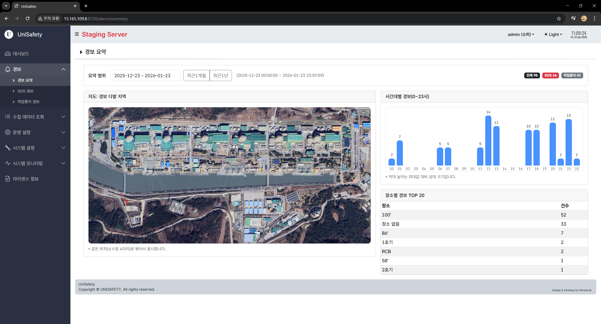
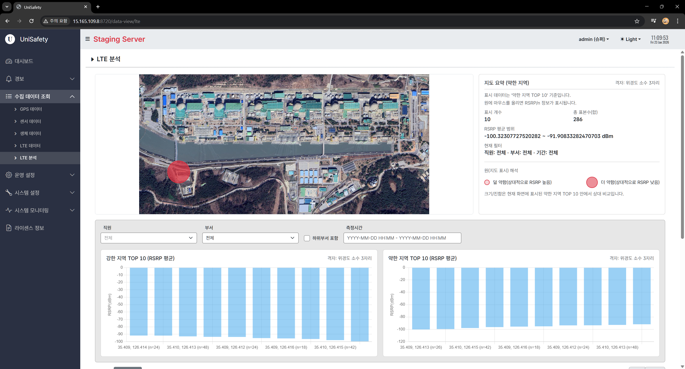
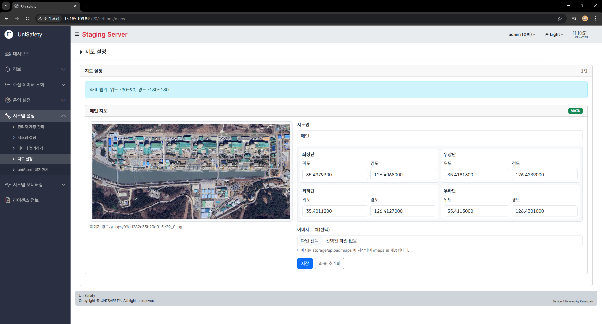
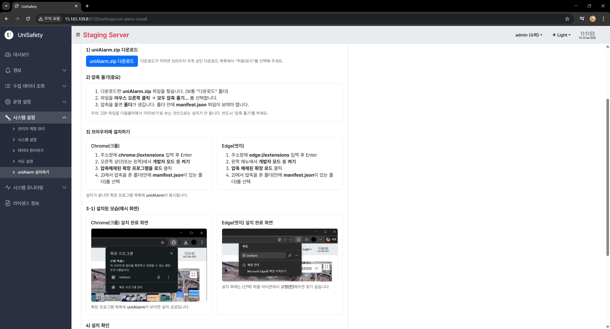
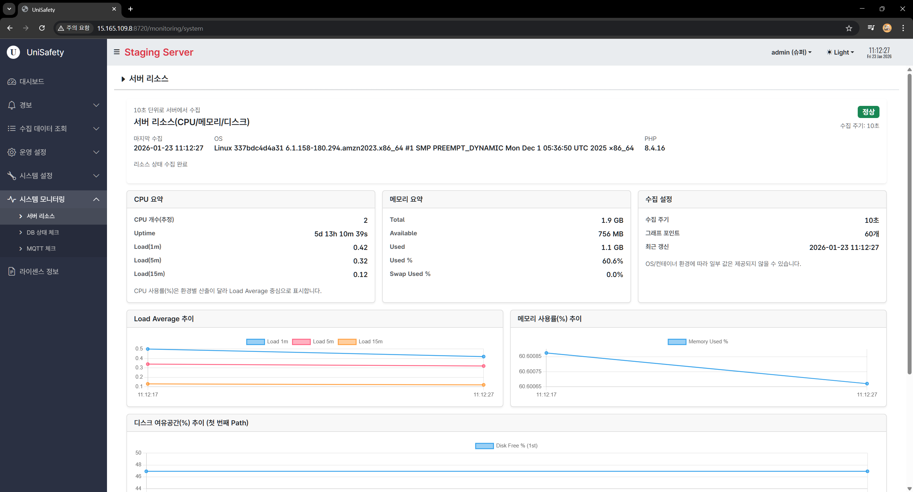
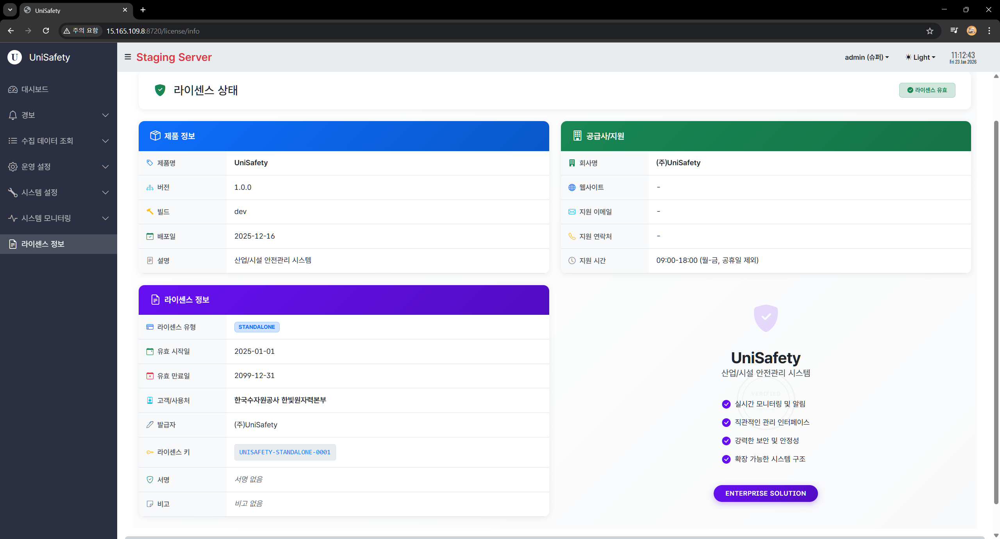
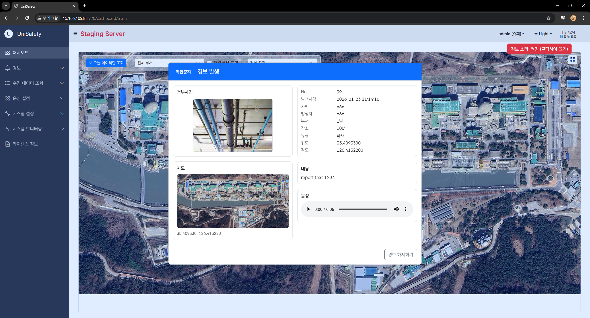

산업 현장의 안전은 타협할 수 없는 최우선 가치입니다. 케네스랩은 최근 산업 현장 근로자의 안전을 실시간으로 빈틈없이 지킬 수 있는 안전통합관제시스템 'Unisafety'를 개발하여 성공적으로 공급하였습니다.
이번 프로젝트는 근로자의 위치와 생체 데이터를 실시간으로 수집 및 분석하여 위험 상황을 조기에 감지하고, 즉각적인 대응이 가능하도록 설계되었습니다.

Unisafety 통합 관제 대시보드 메인 화면
주요 기능: 스마트 디바이스 연동 및 위치 추적
근로자 개개인이 소지한 스마트폰과 스마트워치를 연동하여 근로자의 상태를 정밀하게 모니터링합니다. GPS, WiFi, BLE 등을 활용한 정밀 위치 추적뿐만 아니라, 스마트워치를 통해 심박수 등의 생체 데이터를 수집합니다. 또한 각종 가스 센서 및 환경 센서와 연동하여 작업 공간의 위험 요소를 실시간으로 감지합니다.


이동 동선 파악 및 분석
넓은 산업 현장에서 근로자가 어디로 이동했는지 이동 동선을 시각적으로 파악할 수 있는 기능을 제공합니다. 이를 통해 위험 구역 접근 이력을 확인하거나, 비효율적인 동선을 개선하고, 만약의 사고 발생 시 원인을 분석하는 데 중요한 기초 자료로 활용할 수 있습니다.


실시간 경보 시스템 및 MQTT 통신
위험 상황 발생 시 골든타임을 확보하는 것이 무엇보다 중요합니다. Unisafety는 중앙 관제실에서 현장으로 작업중지 경보 및 위험 알람 경보를 즉시 전송하는 시스템을 구축했습니다.
특히 열악한 네트워크 환경이 많은 산업 현장의 특성을 고려하여, 서버와 스마트폰 간의 통신에 경량 메시징 프로토콜인 MQTT를 적극 활용하였습니다. 이를 통해 배터리 소모를 최소화하면서도 끊김 없는 실시간 양방향 통신을 구현했습니다.

AI 기술을 활용한 프로젝트 고도화
이번 프로젝트는 최신 AI 기술인 ChatGPT 5.2와 Claude Sonnet 4.5를 개발 전반에 적극적으로 활용한 사례이기도 합니다. 복잡한 데이터 분석 로직을 설계하거나, 대용량 센서 데이터를 처리하는 알고리즘을 최적화하는 과정에서 AI와의 협업을 통해 개발 효율성과 시스템의 완성도를 획기적으로 높였습니다.


케네스랩은 앞으로도 4차 산업혁명 기술을 통해 현장의 안전을 책임지고, 기업의 생산성을 높이는 든든한 파트너가 되겠습니다.